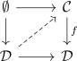
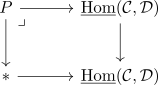

trivial fibration is a joyal equivalence
Proposition
Let $\mathrm{sSet}$ be the category sSet and $f: \mathcal{C} \rightarrow \mathcal{D}$ a functor between infinity categories. Suppose $f$ is a trivial fibration
Then $f$ is also a joyal equivalence
Proof
use the right lifting property against the monomorphism given by the initial morphism
\begin{align*}
\iota: \emptyset \rightarrow \mathcal{D}
\end{align*}

Consider the following

- postcomposition with a trivial fibration is a trivial fibration
- <trivial fibration + pullback>
- terminal sSet is an infinity groupoid
- $P$ as Kan complex (?)
-
- TODO
- path component